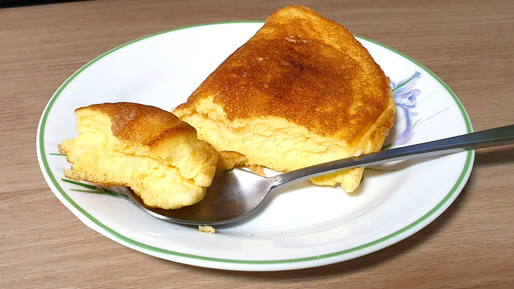

오랜 기간 제대로 된 외출을 못 해서인지 온라인 수업이라는 미묘한 느낌의 개강에 김이 식어버린 것인지 그냥 거하게 딴짓을 하고 싶단 생각이 들었다. 그렇게 아무 생각이나 하다 언젠가 만화에서 보던 크림스튜를 직접 만들어서 마구 퍼먹고 싶다는 생각이 들었다.
크림스튜에는 왠지 모를 환상이 있다. 지브리 영화에서 볼 법한 나무그릇에 담은 따뜻한 스프라던가 따뜻한 가정의 상징으로 나오는 모습이라던가. 자주 해먹지 않아서 생기는 환상인거 같은데 사실 만들고자 하면 웬만한 음식보다 훨씬 간단하다! 그리고 왠지모르게 만들고 싶은 마음이 폭발해서 마트로 달려가 재료를 구해 양도 계량도 대충대충인 크림스튜를 만들기로 했다.
크림스튜 안에 넣을 재료는 양도 재료도 취향껏 넣어도 된다! 나는 자취를 하고 있다 보니 다양하게 쓸 수 있는 양파, 당근, 감자만 넣었지만 브로콜리도 좋고 버섯이나 시금치, 콩, 마카로니도 어울린다. 기본적으로 재료는 전부 한입에 잘 들어가는 크기로 썬다. 자기 입 크기에 맞게 적당히 썰어보자.
다음은 고기류 손질이다. 고기도 당연하게도 마음대로지만 나는 닭가슴살을 썼다. 소, 닭, 돼지 뭐든 자유지만 끓일 때 생으로 넣지 않고 익혀서 넣는다. 얼마만큼 익히는가는 재료마다 다르겠지만 닭가슴살은 소금과 후추로 간을 한 뒤 겉면만 익을 정도면 충분하다.
이제 스튜에 점성을 추가해줄 루를 만들어보자. 루는 버터와 밀가루를 볶아 만드는데 한 냄비 가득 만든다면 버터 70~80g, 밀가루 100g 정도를 볶아준다. 나같이 미각에 둔감한 사람은 부족하면 더 넣고 더 끓이면 그만이니 적당히 하면 된다.
덧붙여서 이 과정이 귀찮거나 버터가 너무 비싸서 부담된다면 즉석 크림스프 가루를 사서 넣어도 된다. 사실 이게 내가 직접 해먹는 것보다 맛있을지도 모른다….
밑준비가 끝났으면 식용유나 버터에 채소를 살짝 볶고 닭가슴살을 넣고 조금 더 볶아준다. 왠지 집어먹고 싶은 향이 나면 치킨 스톡을 푼 물 200mL, 우유 800mL를 넣어주는데 스프가루를 쓸 거면 치킨 스톡은 생략해도 된다. 그 뒤 루를 넣고 잘 저어서 10분 동안 핸드폰 보다 살짝살짝 저어주기만 하면 완성! 만드는 법이랄 것도 없이 너무너무 간단하다. 불만 약불로 해서 끓이는 걸 잊지 말자.
간이 안맞으면 소금을 넣어주고 양이 부족하면 우유를 넣어주고 점성이 부족하면 루를 더 만들어서 넣고 끓여주면 된다.
아무리 야매요리를 많이 만들어와도 만들고 나면 뭔가 불안한 법이다. 불안 반 기대 반으로 크림스튜를 먹어봤는데 정말 생각외로 맛있게 잘 나왔다! 달짝지근한 수프에 채소와 닭고기가 잘 어우러져서 정말 맛있었다. 빵 말고도 밥이랑 먹어도 정말 맛있다.
이렇게 만들어도 완성이 되니 누가 만들어도 맛있을 크림스튜! 하지만 한 끼 먹고 나서 남은 양을 보니 뭔 짓을 한 건가 싶기도 했다. 결국 남은 스튜는 친구에게 헬프콜을 해서 해치웠는데 맛있게 먹어줘서 다행이었다 :)
충동적으로 만든 스튜였지만 나름 성공적이었다. 하루종일 집중이 안되고 멍해져 있는 날, 스마트폰을 만지작거리거나 게임을 하는 것도 즐겁지만 몰두할 수 있는 평소에 안해볼 법한 요리를 해보는 것도 정말 나쁘지 않은 것 같다.
참고로 나는 그 사이에 또 충동적으로 수플레 오믈렛을 만들었는데... 아무리 그래도 충동적으로 머랭을 칠 생각은 하지말자.